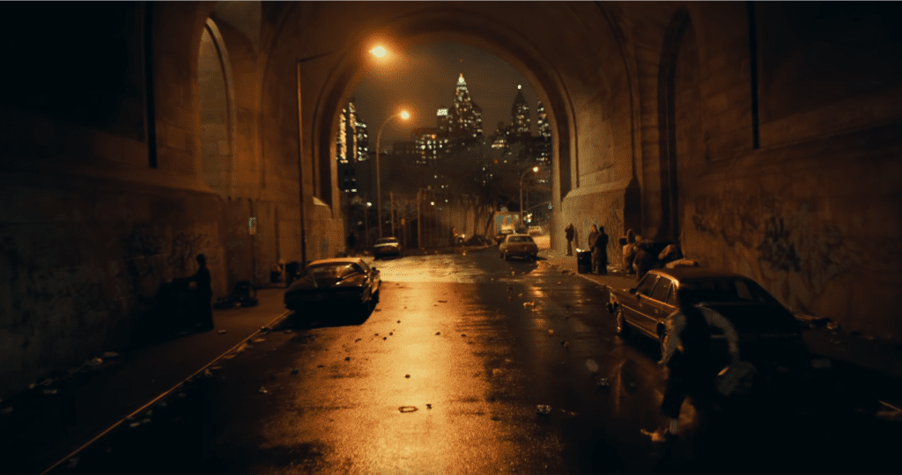
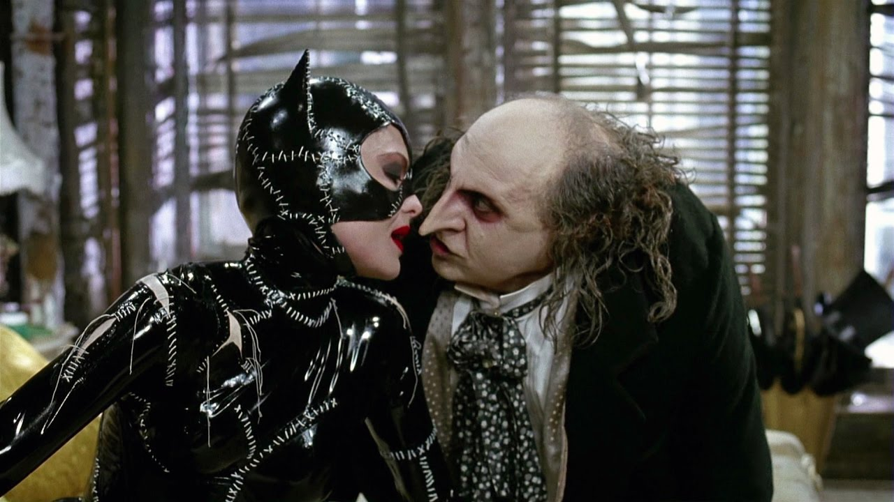

Notícias Cidade
RECENTES ACONTECIMENTOS EM GOTHAM CITY
NOVA LEGISLAÇÃO
A segurança de Gotham City fica na responsabilidade do D.P.G.C., o departamento policial da cidade. Eles cuidam das patrulhas e prisão da maior parte dos crimes da cidade. A S.W.A.T. também é raramente acionada quando um problema maior ocorre. A promotoria de Gotham
Leia maisACONTENCIMENTOS PELO MUNDO
-

Médicos inconformados
Novas Tecnologias da Comunicação e Informação (TICs), surgiram no contexto ...
-
Coringa: o rei do crime
Novas Tecnologias da Comunicação e Informação (TICs), surgiram no contexto ...
-

Novas tecnologias
Novas Tecnologias da Comunicação e Informação (TICs), surgiram no contexto
-
A LENDA DO HOMEM MORCEGO
Novas Tecnologias da Comunicação e Informação (TICs), surgiram no contexto
-

Romance:mulher gato e pimguim?
Novas Tecnologias da Comunicação e Informação (TICs), surgiram no contexto
-
Nova Legislação
Novas Tecnologias da Comunicação e Informação (TICs), surgiram no contexto
DESTAQUES
BATMAN:A LENDA DO HOMEM MORCEGO
Em meados dos anos 90, um vigilante conhecido como "o Batman" travou uma guerra de um homem contra o crime. Armado com um protótipo de traje blindado de alta tecnologia, vários equipamentos
Leia mais